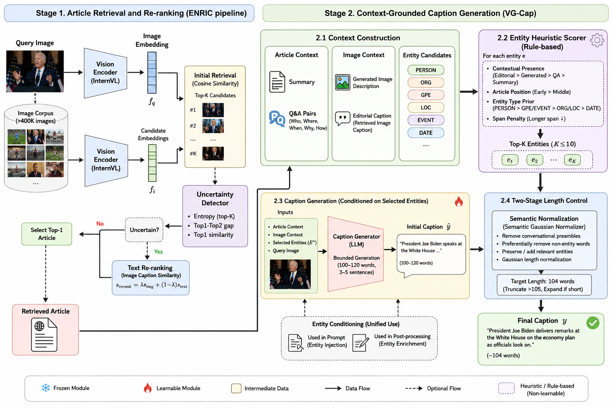

TL;DR News articles name far more people, places and events than a photo shows. VG-Cap scores every article entity for visual groundedness and lets only the grounded ones into the caption, both in the prompt and in post-generation enrichment. Two-Stage Length Control keeps captions near the 104-word target.
OpenEvents-V1 public test · same retrieval backbone as ENRIC
News image captioning requires models to connect visual evidence with external article context to identify depicted people, locations, events, and their broader significance. Existing retrieval-augmented methods typically inject all named entities extracted from the retrieved article into the captioning pipeline. However, news articles often mention secondary actors and background events that are not depicted, leading to unsupported descriptions and inefficient use of the caption budget. We introduce VG-Cap, a retrieval-augmented news captioning framework that selectively incorporates entities according to their estimated visual groundedness. Our Entity Heuristic Scorer ranks candidate entities using their presence across visual and textual context, position within the article, and semantic type. A unified gating mechanism applies the same entity selection to both prompt-time entity conditioning and post-generation enrichment, preventing rejected entities from being introduced through these explicit entity pathways. We further introduce Two-Stage Length Control mechanism that combines bounded generation with entity-preserving semantic normalization. Experiments on the OpenEvents-V1 dataset demonstrate that VG-Cap consistently outperforms the strongest baselines. The results further show that selective entity grounding improves the relevance and semantic alignment of generated news captions by reducing unnecessary contextual entities.
A retrieval-augmented framework for event-enriched captioning that makes the use of external knowledge selective and visually grounded.
Scores article entities by contextual presence, document position and semantic type. One selection gates both prompt injection and post-generation enrichment.
Bounded generation followed by entity-preserving semantic normalization reduces the length mismatch without dropping key event information.
Two stages: article retrieval (fixed, from ENRIC), then context-grounded caption generation. Click a step to see it in the figure.

VG-Cap reuses ENRIC's retrieval backbone, unchanged. InternVL-14B encodes the query image and the corpus (>400K images), and the top-K (K = 15) candidates are kept by cosine similarity.
An uncertainty detector checks three signals: the entropy of the top-K distribution, the gap between the top-1 and top-2 scores, and the top-1 similarity. For uncertain queries only, caption-based text similarity is blended in:
The highest-scoring candidate gives the retrieved article. Retrieval is identical to ENRIC in every experiment.
The article covers much more than the depicted scene, so VG-Cap organizes the available information into three groups:
Candidates come from NER over the article plus LLM keyword lists, merged by substring-aware deduplication. Each candidate gets a groundedness score:
Length is regulated twice: the prompt bounds generation to a range, then a normalizer brings the caption to the target length L* = 104 words.
The same selected set \(\mathcal{E}^{*}\) is passed to both entity pathways:
Captions with all article entities (Unfiltered · 0.6166) compared with VG-Cap (VG-Cap · 0.6219). Both use the same retrieval, backbone and 104-word target. Hover an entity chip to find it in the captions.
OpenEvents-V1 public test. Overall Score is the weighted harmonic mean of the retrieval and captioning metrics.
* Overall Score computed from the official evaluation formula (not reported by the original authors).
Every method retrieves well (AP 0.970–0.995), so retrieval barely separates them.
The ranking depends on balancing CIDEr and CLIPScore. Bubble size shows the Overall Score.
Every component adds to the Overall Score. The selector's gain comes with no change in length, so it reflects what is said, not how much.
Unfiltered (0.6166) vs groundedness-filtered (0.6219) captions on the 3,000 public-test queries. Both use identical retrieval, backbone, normalizer and 104-word target.
The selector reallocates the caption budget rather than only deleting entities.
Centered at μ = −0.83 (σ = 2.44): most captions lose one or two entities.
DATE and ORG, which are rarely depictable, lead the removals. Many secondary PERSONs fall outside the top-10 cap.
@inproceedings{phan2027vgcap,
title = {Grounding What Matters: Selective Entity Conditioning
for Event-Enriched News Image Captioning},
author = {Phan, Van-Phuc and Pham, Minh-Tan and Tran, Mai-Khiem and Do, Trong-Le and
Nguyen, Hai-Dang and Nguyen, Tam V. and Tran, Minh-Triet and Le, Trung-Nghia},
booktitle = {International Conference on Multimedia Modeling (MMM)},
year = {2027}
}